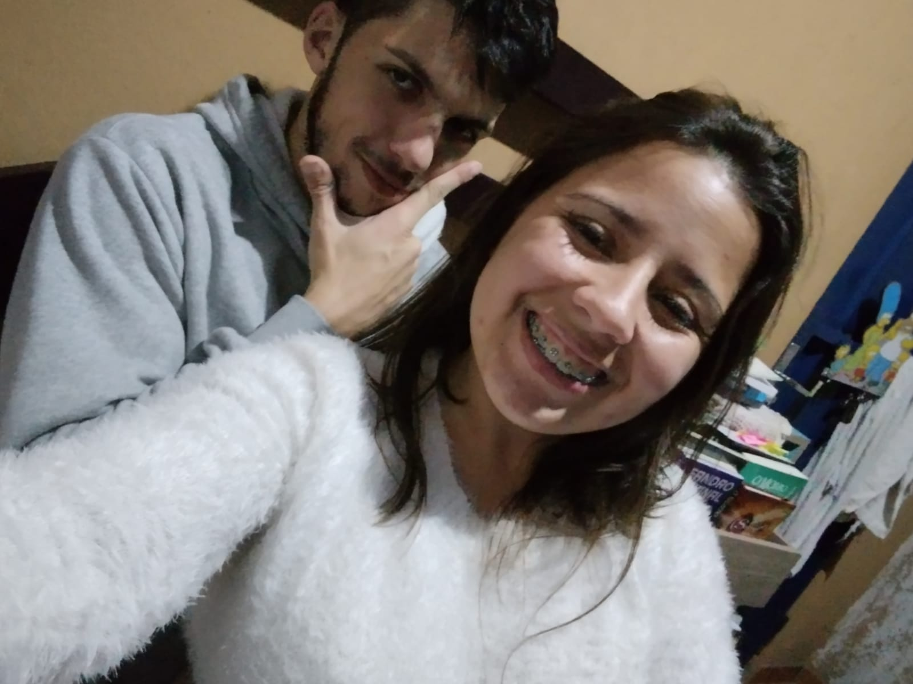
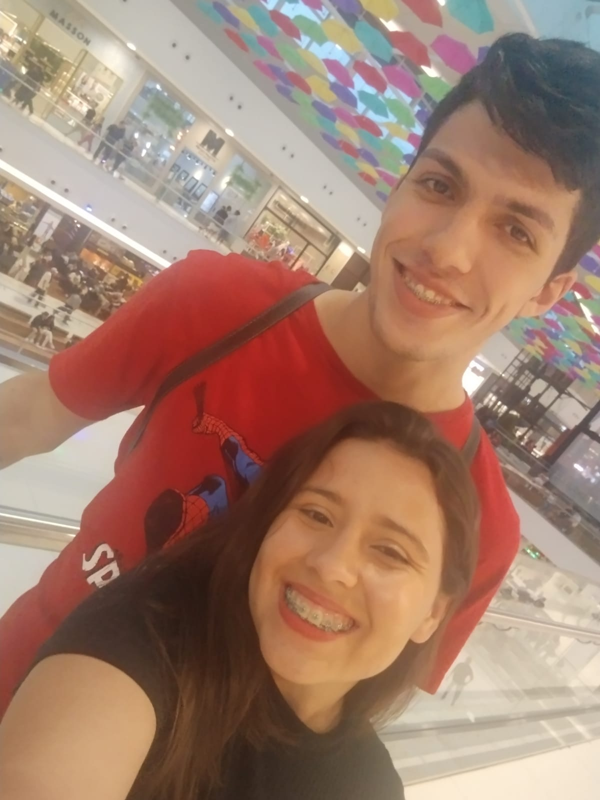
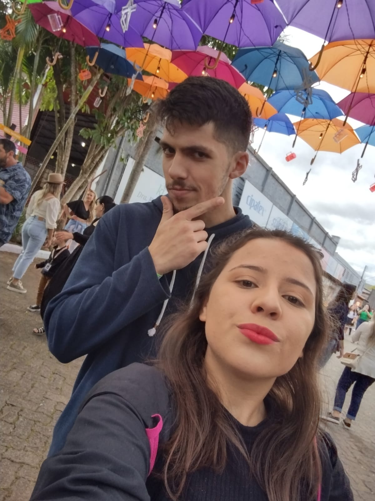
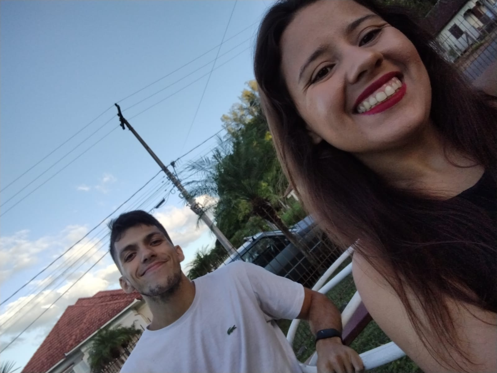

O AMOR É UMA ROSA

Acho que já tava mais do que na hora de te apresentar a surpresa que eu tanto queria te fazer. Não é exatamente hoje, mas eu não conheço momento melhor pra te fazer isso.
Hoje venho te falar sobre nós, um amor lindo e bem complicado. Acho que quem vê de fora talvez pense um dia em quão bom seria ter a nossa relação. Mas ninguém quer passar por tudo que já passamos.
Uma mulher forte, linda, dedicada, agitada, inteligente e totalmente estressada. E sim eu me apaixonei por você por causa de uma simples conversa, mas comecei a te amar por tudo que fomos passando. Se as pessoas soubessem que o amor é tão dificil assim, acho que dariam mais valor para as pessoas que estão atualmente
Eu aprendi muito com o nosso relacionamento, por mais complicado que ele seja ou já tenha sido alguma vez.
Nós rimos, choramos, brigamos, nos moldamos, nos regramos e fomos fazendo dar certo. Acredito que agora finalmente eu seja capaz de entender o que o amor realmente é, ele é uma rosa, uma simples e linda rosa.
Eu vou explicar. A o amor tem a beleza de uma rosa, mas machuca como os espinhos dela. O amor precisa de cuidado e ser regado todos os dias para que possa florecer e se manter sempre vivo, assim como a linda e bela rosa que o representa.
Hoje vamos relembrar um pouco o tempo que estavamos morando nos teus pais de forma simples, mas nostalgica.
Espero que possamos regar essa nossa rosa por muitos anos.
